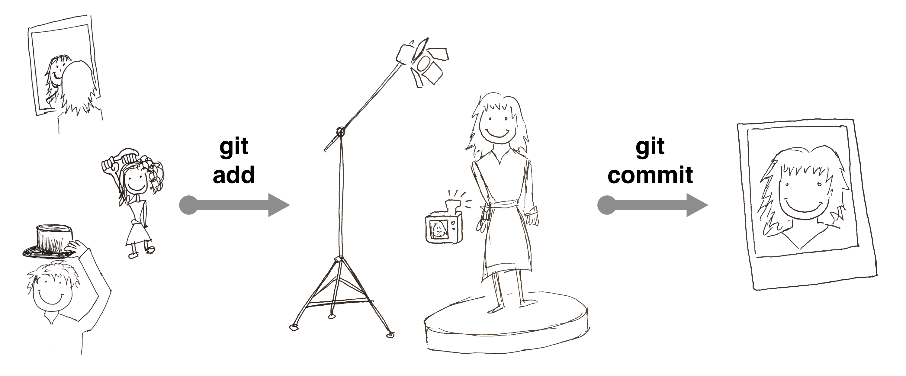

Git Cheat Sheet
Setting Up Git
Configure your name and email (use the same email as GitHub)
git config --global user.name "Vlad Dracula"
git config --global user.email vlad@tran.sylvan.iaEnable coloured text for improved readability
git config --global color.ui "auto" Creating a Repository
Initialize a new Git repository locally
git initDisplay the current status of the repository (such as changed files)
git statusTracking Changes
Add a specific file to the staging area
git add file.txtAdd all of the files in the current directory to the staging area
git add .Commit the current staging area to a commit
git commit -m "Descriptive message"Display file changes that exist in the current working directory
git diff
Exploring History
Display past commits
git logCompare a file to what it looked like one commit ago (HEAD~1)
git diff HEAD~1 file.txtCompare a file to what it looked like at a specific commit (for example, f57057)
git diff f57057 file.txtRestore file to what it was at the last commit (HEAD)
git checkout HEAD file.txtRestore a file to what it was at a specific commit (for example, f57057)
git checkout f57057 file.txtIgnoring Things
Ignore files in your repository using the .gitignore file (note the dot before gitignore)
nano .gitignore
git add .gitignore
git commit -m "Add the ignore file"Remotes in GitHub
After creating a repository on GitHub, add it as a remote to your local repository
git remote add origin https://github.com/<username>/<repository_name>List all remotes associated with your Git repository
git remote –vUpload (push) local repository to GitHub
git push origin masterDownload (pull) remote changes on GitHub to your local repository
git pull origin masterConflicts
When you encounter a merge conflict, the file in question will contain something that looks like the following. You will need to manually edit this to decide what you want to keep and remove the extra lines: the ones with <<<<<, ===== and >>>>>.
<<<<<<< HEAD
Blah blah blah (our version)
=======
Blah blah blah (other version)
>>>>>>> 86cb171b60a13dAttribution
The Git Add–Commit sketch was drawn by Marija Jovanovic.